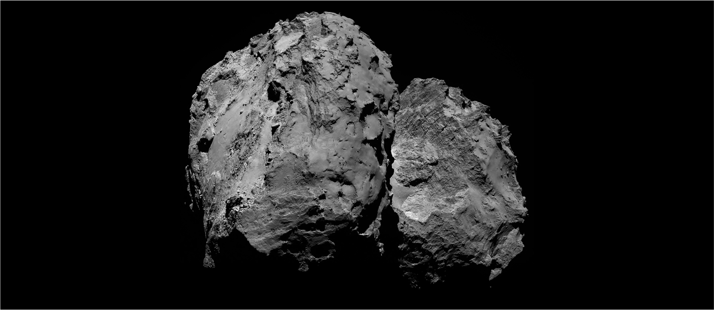
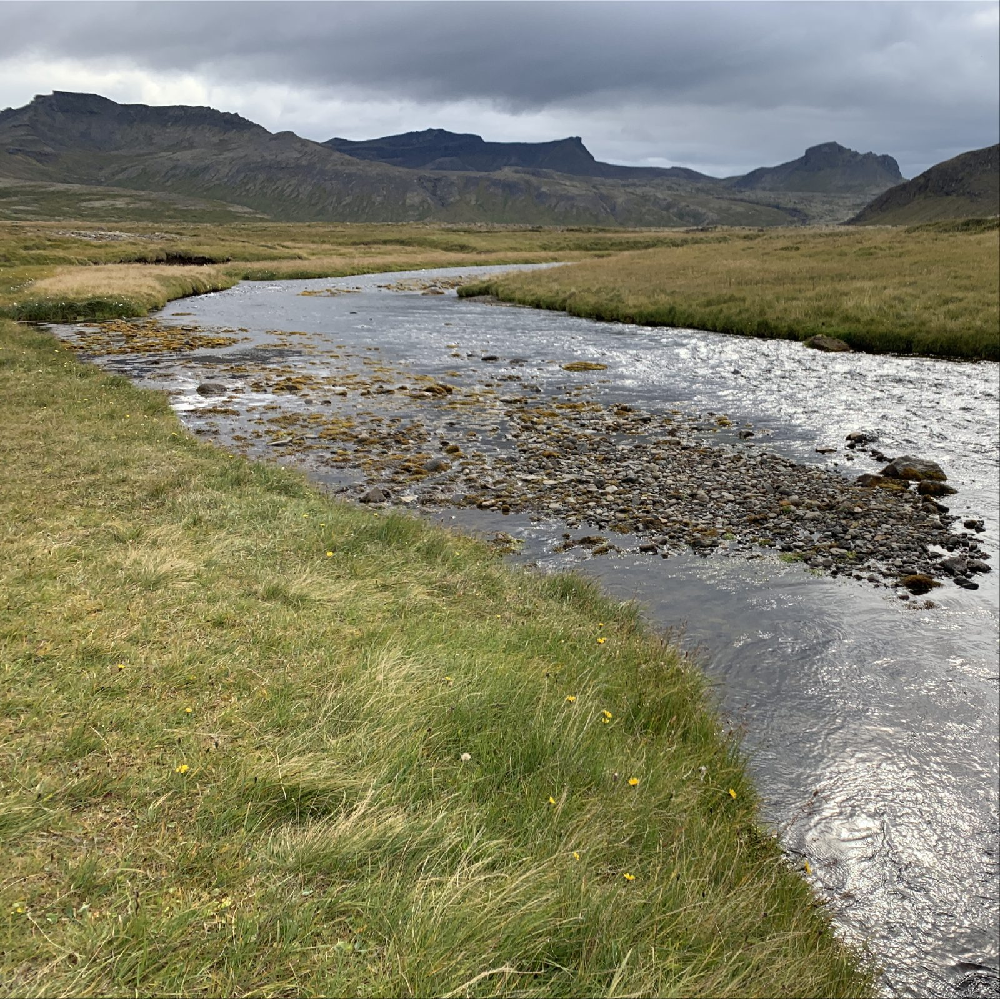
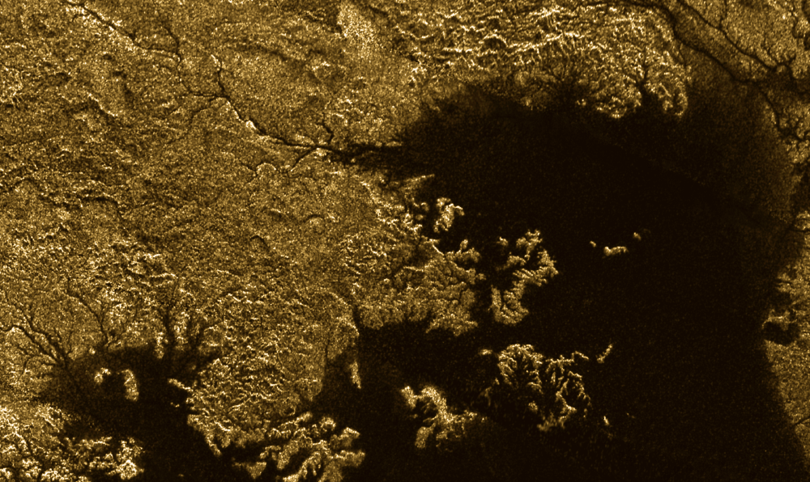
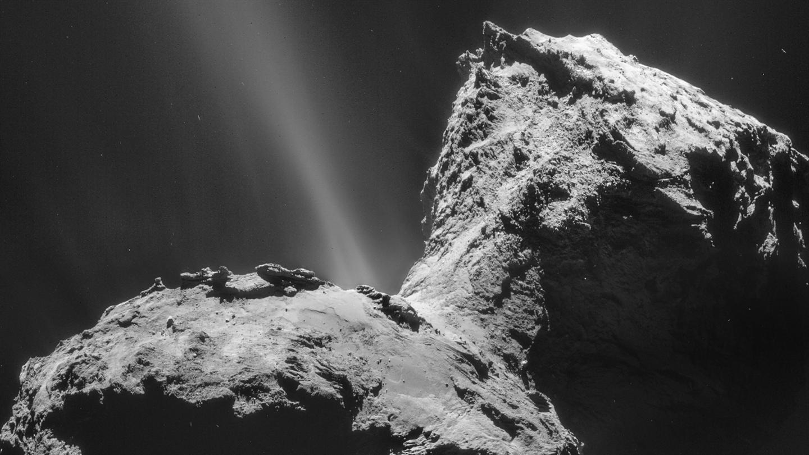
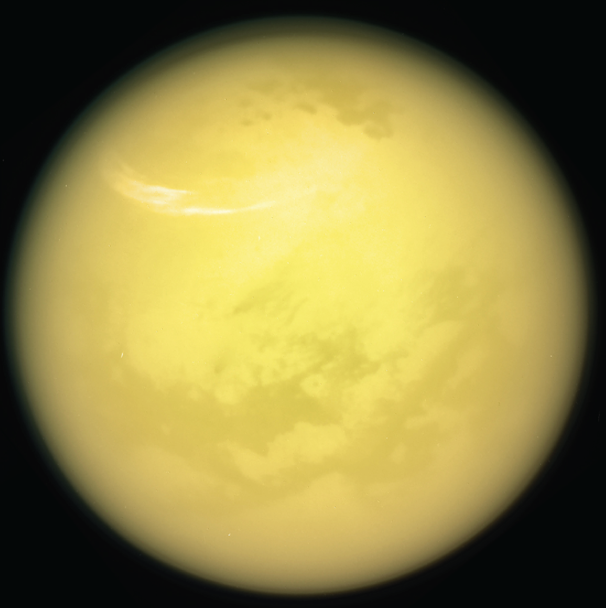
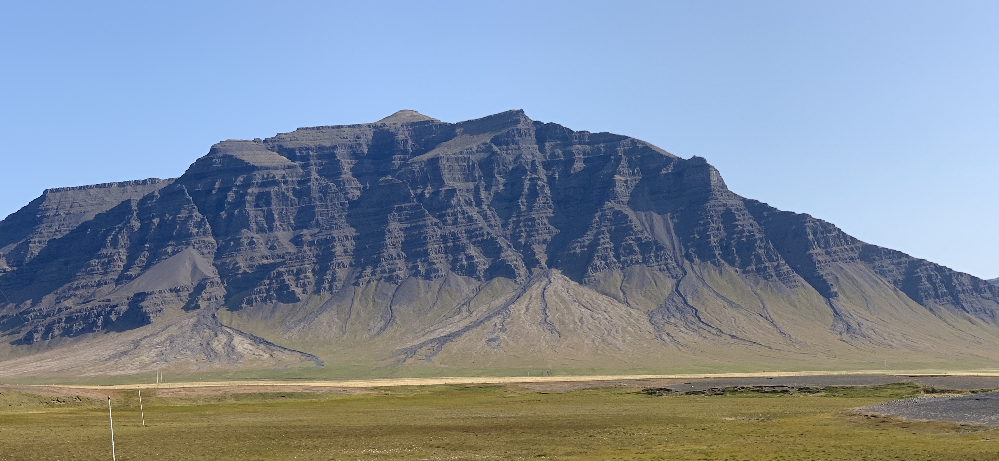

What shapes the landscapes of our solar system?
From Titan's rivers to the cliffs of comet 67P, we use data, models, experiments, and field work to understand how these many surfaces came to be, and what that implies for their ever-changing climates
Landscapes provide a long-term record of a planet's climate evolution – being able to decipher this record is therefore of obvious importance to understand how a given planet has evolved, and how that may change into the future. Across the solar system, spacecraft exploration has revealed an increasingly rich diversity of planetary landscapes and climates...


On worlds like Titan, it is raining somewhere (right now!), with runoff from its rivers flowing into vast seas, where the wind can then kick up waves. How does this alien hydrologic system evolve? Everything looks the same, but is it?
Mars was once like Earth but its water is long gone. How long this system persisted is one of the outstanding questions in the planetary sciences.
Comets barely have any gravity, no atmosphere, and a material that is weaker than freshly fallen snow. Yet they have landscapes, that evolve and transport sediment seasonally as their icy surfaces flyby the Sun. Comets are therefore landscape evolution pushed to its most extreme, an opportunity we like to leverage!

Each surface evolves with different materials, under different climates and with different gravities – a solar system-wide puzzle of landscapes to piece together. We try to read these landscapes one-by-one, with the hope of one day developing a more complete understanding of the physics of landscape evolution. To do this, we use all the typical tools of a geomorphologist: mathematical and numerical models, lab experiments, field work, and remote sensing data.



Come explore new worlds with us
We love working with curious people. If you're a prospective student, postdoc, or collaborator excited about planetary landscapes, we'd love to hear from you.
Get in touch →